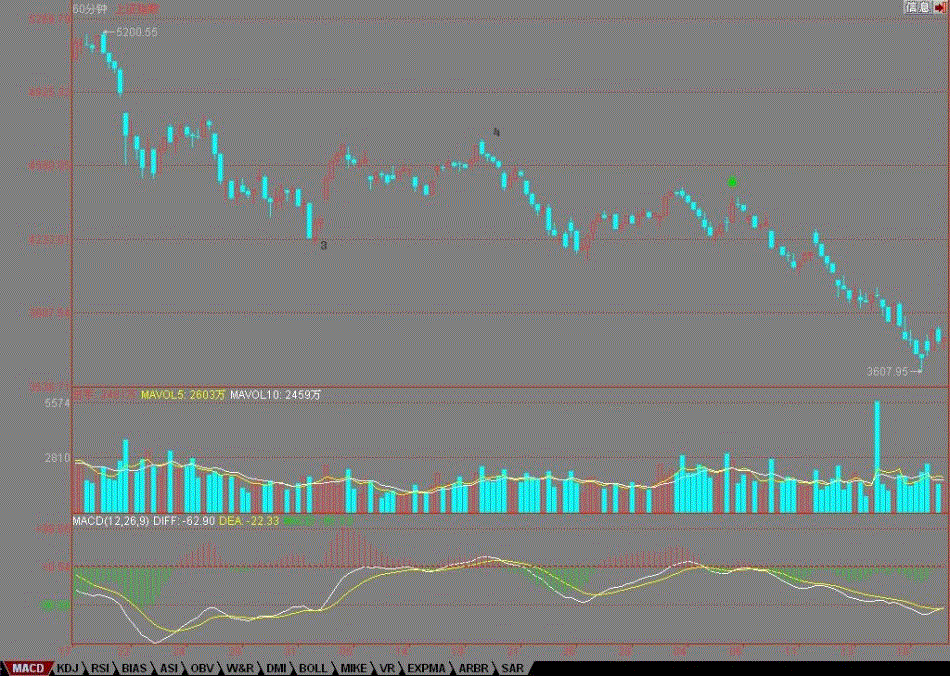

我们现在只是纯技术性地探讨走势，那么，3775点能否站稳将决定大盘反弹能否延续。今天一大早高开后回试是一个次佳的买入机会，为什么？看看60分钟图就知道，这刚好构成底分型。而3775点，刚好是这底分型的上边沿。

如果你明白这技术上的问题，那就会很放心地在早上第一小时回试时买入，很多股票当时还曾砸出比昨天更低的位置，例如000938，而收盘是涨停的。
这里，必须有一个纠正，图上绿箭头所指位置其实已经足够构成一笔，而这笔没有回到4431点上，刚好构成类第三类卖点。所以，现在的大盘走势很简单，直接拉回图中3的位置，还是在这里折腾出一个线段来。
由于目前还没有出现明确的区间套，不能完全确认从4下来的这下跌就一定走完，而单纯从60分钟图看，这显然构成了一个背驰段，只是这背驰段没有得到区间套的精确定位去确认。不过，按通常的情况下，最终回拉图中3的位置是必然的事情，唯一需要选择的，是完美地完成区间套，还是就此直接上去了。
而这一切，3775点是一个关键，为什么？因为这决定了早上第一小时构成的那底分型能否最终延伸为笔，如果笔都不能延伸出来，那当然需要再探底去完成区间套的完美构造。
个股方面，一反弹就知道，低价股和题材股依然是最有活力的，这种弹性十足的股性，具有最好的操作性，要好好珍惜。再说一次，今年是低价与题材的天下，但一定要知道，没有单边，只有折腾，而折腾，来回短跑，产生的利润一点都不会比单边的少。
先下，再见。